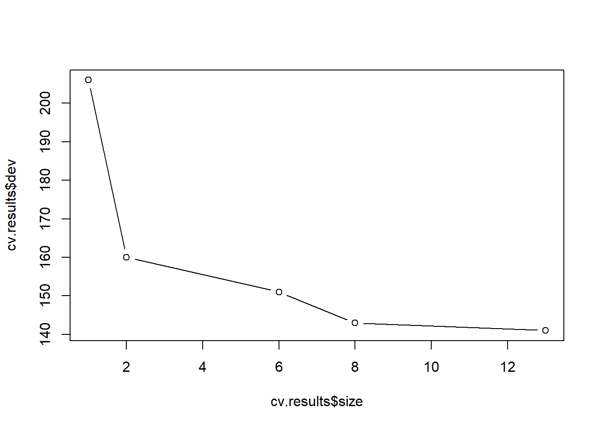
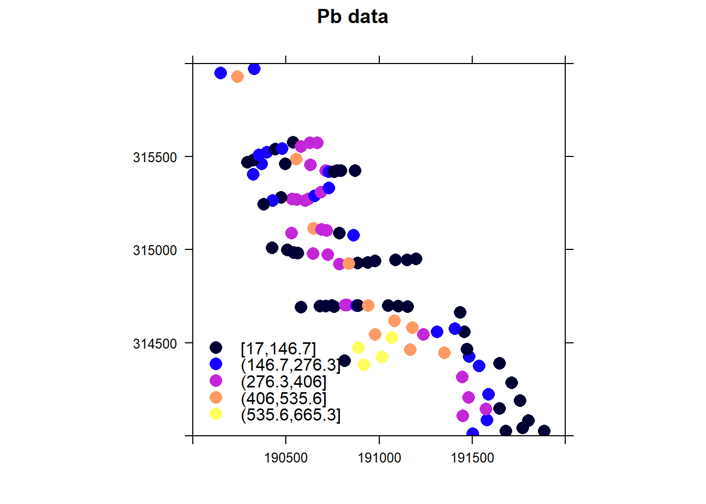
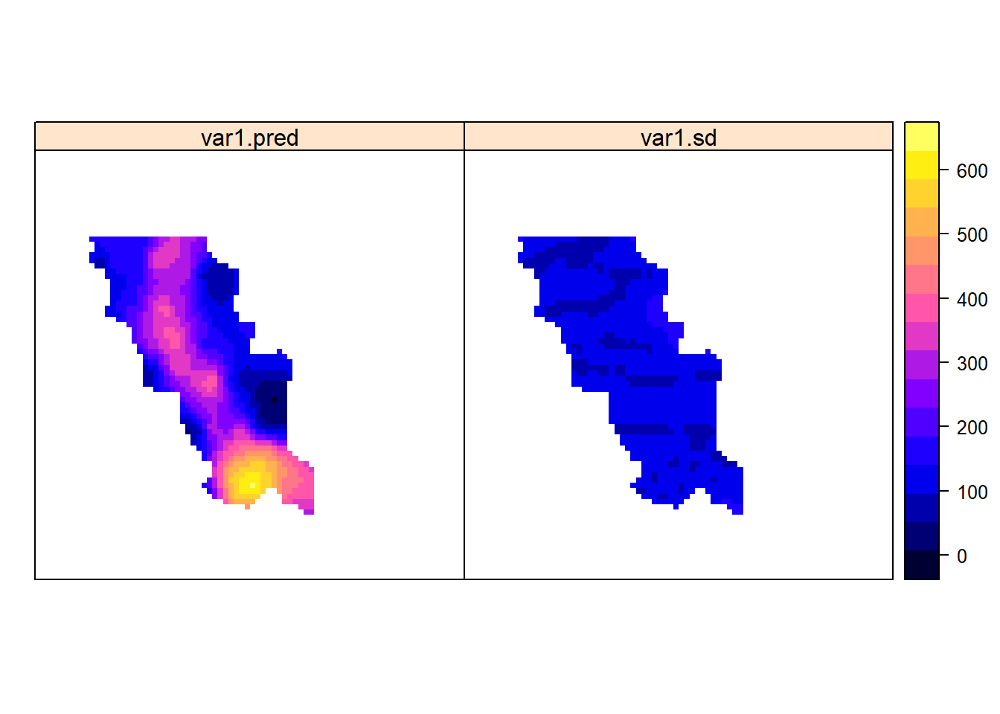
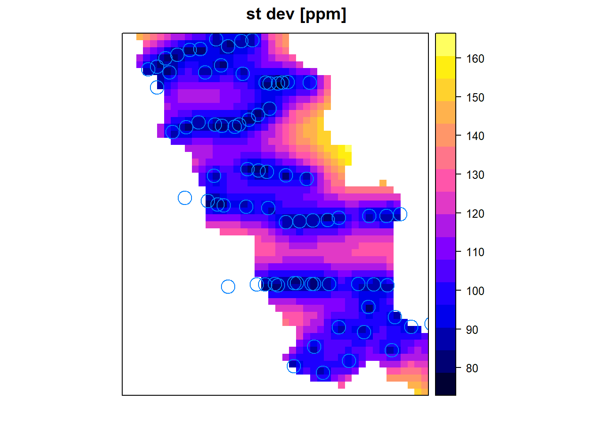
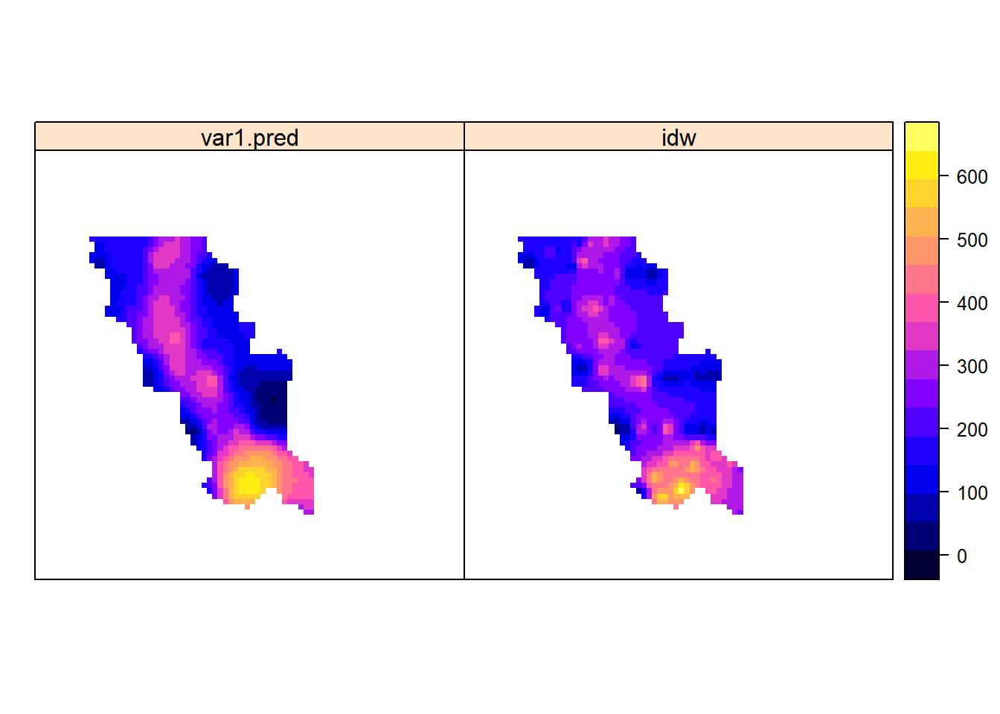

Рандомизация, бутстреп и все-все-все
Деревья принятия решений
Теперь мы перейдем к одному из легко интерпретируемых и наиболее популярных методов классификации: деревья решений. Деревья решений, которые выглядят как перевернутое дерево с основанием сверху и кроной внизу, играют важную роль в ситуациях, когда задачи классификации должны быть предельно прозрачными и легко интерпретируемыми. Метод довольно грациозно обрабатывает как непрерывные, так и категориальные предикторы, выбросы и несоответствующие предикторы. Наконец, общие идеи алгоритмов, которые создают деревья решений, достаточно интуитивно понятны, хотя детали могут иногда осложнить ситуацию.

Пример классификационного дерева
Рассмотрим довольно простое дерево решений с тремя листьями (конечными узлами) и двумя точками принятия решения. Обратите внимание, что первая точка принятия решения - это (a) бинарная категориальная переменная, и (b) приводит к одному терминальному узлу - мотоциклу. Другая ветвь содержит другую точку решения, непрерывную переменную с точкой разделения. Эта точка разделения была тщательно выбрана алгоритмом создания дерева решений, чтобы получить наиболее информативное разделение, которое наилучшим образом классифицирует остальную часть наблюдений, измеренную по коэффициенту ошибочной классификации данных обучения
На самом деле, в большинстве случаев, алгоритм создания дерева решений не выбирает разбивку, которая приводит к самому низкому уровню ошибок в классификации Но выбирает то, что минимизирует либо коэффициент Джини, либо кросс энтропию остальных тренировочных наблюдений. У этого выюора есть две причины: (а) и коэффициент Джини, и кросс энтропия имеют математические свойства, которые делают их более легко применимыми для численной оптимизации, и (б) оба подхода обычно приводит к финальному дереву с меньшим смещением.
Общая идея алгоритма создания(иногда пишут выращивания) дерева решений - рекурсивного разбиения, проста:
- Шаг 1: Выберите переменную и точку разделения, которая приведет к лучшим результатам классификации.
- Шаг 2. Для каждой из результирующих ветвей проверьте, соблюдены ли некоторые критерии остановки. Если да, оставьте это в покое. Если нет, переходите к следующему шагу.
- Шаг 3: Повторите шаг 1 на ветвях, которые не соответствуют критериям остановки.
Критерий остановки обычно представляет собой либо определенную глубину, по которой дерево не может вырасти, либо минимальное количество наблюдений, для которых листовой узел далее классифицировать не может. Оба эти параметра являются гиперпараметрами (также называемыми параметрами настройки) алгоритма дерева решений - и их нужно обрабатывать, чтобы достичь наилучшего дерева решений для классификации независимого набора данных. Дерево решений, если его не держать под контролем, может сильно переусердствовать с данными, возвращая громадное и сложное дерево с минимальным размером листового узла, равным 1, что приводит к почти безрассудному механизму классификации с огромной дисперсией. Чтобы этого не произошло, либо параметры настройки должны быть выбраны очень тщательно, либо огромное дерево может быть перестроено и сокращено до меньшего размера впоследствии. Последний подход обычно наиболее предпочтителен и, вполне уместно, называется обрезкой. Наиболее распространенная техника обрезки называется сокращением затрат, где сложные части дерева, которые мало влияют на классификационную способность, измеряются путем улучшения конечной скорости классификации, сокращаются и удаляются.
Достаточно теории, давайте начнем! Во-первых, мы будем выращивать полное дерево с использованием набора данных PID и построить результат:
library(mlbench)
library(tree)
data(PimaIndiansDiabetes)
PID <- PimaIndiansDiabetes
accuracy <- function(predictions, answers){sum((predictions==answers)/(length(answers)))}
ntrain <- round(nrow(PID)*4/5)
train <- sample(1:nrow(PID), ntrain)
training <- PID[train,]
testing <- PID[-train,]
our.big.tree <- tree(diabetes ~ ., data=training)
summary(our.big.tree)##
## Classification tree:
## tree(formula = diabetes ~ ., data = training)
## Variables actually used in tree construction:
## [1] "glucose" "mass" "age" "pedigree" "pregnant"
## Number of terminal nodes: 13
## Residual mean deviance: 0.8459 = 508.4 / 601
## Misclassification error rate: 0.1987 = 122 / 614plot(our.big.tree)
text(our.big.tree)
Сила дерева решений, который обычно мало нкурентоспособен по сравнению с другими механизмами классификации, с точки зрения точности, состоит в том, что правила разбиения прозрачны, легко визуализируются и легко объясняются. Это дерево довольно большое и громоздкое, что препятствует его способности быть понятым (или запомтинаемым) с первого взгляда. Кроме того, при всей своей сложности он достигает только 81% точности тренировочных данных (как сообщается итоговой функцией). Далее, мы будем исследовать оптимальный размер дерева, используя кросс-проверку, с помощью функции cv.tree.
set.seed(3)
cv.results <- cv.tree(our.big.tree, FUN=prune.misclass)
plot(cv.results$size, cv.results$dev, type="b")
В предшествующем коде мы сообщаем функции cv.tree, что хотим сократить наше дерево, используя частоту ошибочной классификации как нашу объективную метрику. Затем мы строим график коэффициента CV (dev) и функцию размера (размера) дерева.
Как вы можете видеть из вывода (показано на рис), оптимальный размер (количество терминальных узлов) дерева, кажется, равен пяти. Однако дерево размером три не намного менее эффективно, чем дерево размером пять; Поэтому для удобства визуализации, интерпретации и запоминания мы будем использовать конечное дерево с тремя конечными узлами. Чтобы выполнить обрезку, мы будем использовать функцию prune.misclass, которая принимает размер дерева в качестве аргумента.
pruned.tree <- prune.misclass(our.big.tree, best=3)
plot(pruned.tree)
text(pruned.tree) # let's test its accuracy
pruned.preds <- predict(pruned.tree, newdata=testing, type="class")
accuracy(pruned.preds, testing[,9])## [1] 0.7597403Дерево настолько простое, что его легко запомнить медицинский персонал и достигает той же точности, что и громоздкое дерево на рисунке предыдущей попытки: 71%! В данном случае супер точность наверное и не достижима, особенно потому, что простейший классификатор достигает 65% точности. Тем не менее, тот факт, что значительно лучший классификатор можно построить из двух простых правил - в точности следуя логике, применяемой врачами, это именно то, поле где деревья решений имеют огромное превосходство относительно других методов. Представьте, что по результатам ваших исследований вам нужно дать заказчику очень простой и понятный набор рекомендаций, ничего лучше дерева принятия решений вам не найти
Случайный лес
Одним из способов смягчения недостатков моделей дерева решений является бутстрап агрегация или бэггинг (суммирование - сумкирование). При бэггинге вы извлекаете в “сумки” образцы бутстрапа(случайные образцы с заменой) из ваших данных. По каждому образцу вы строите модель дерева решений. Конечная модель - это среднее из всех индивидуальных деревьев решений. Чтобы сделать это пространное объяснение более конкретным, предположим, что x является входной переменной, \(y_{i}(x)\) - выход i-го дерева, \(c(y_{1}(x), y_{2}(x) , ... y_{n}(x))\) - вектор отдельных выходов, а \(y\) - выход конечной модели:
- При регрессии или для оценки вероятностей классов \(y(x)\) - это среднее значение оценок, полученных отдельными деревьями: \(y(x) = mean(c(y_{1}(x), ... y_{n}(x)))\).
- При классификации конечная модель присваивает классу, получившему наибольшее количество голосов от отдельных деревьев.
Деревья решений методом бэггинга стабилизируют окончательную модель, уменьшая дисперсию; Это повышает точность. Набор деревьев полученный беггингом также менее подвержен оверфиттингу.
Классификаторы при беггинге
Доказательства того, что беггинг уменьшает дисперсию, действительны только для регрессии и для оценки вероятностей классов, но не для классификаторов (моделей, которые возвращают членство в классе, а не вероятности класса). Бэггинг и без того плохого классификатора может сделать его еще хуже. Таким образом, вы определенно хотите работать над оценочными вероятностями класса, если они вообще возможны. Но можно показать, что для деревьев CART (что является реализацией дерева решений в R) при ряде допщуений бэггинг имеет тенденцию повышать точность классификатора.
Набор данных Spambase является хорошим образцом для демонстрации бэггинга. Набор данных состоит из 4600 документов и 57 их черт, которые описывают частоту определенных ключевых слов и символов. Сначала мы подготовим дерево решений, чтобы оценить вероятность того, что данный документ является спамом, а затем мы оценим отклонение дерева и его точность прогнозирования.
Мы напишем несколько вспомогательных функций и обучим дерево решений, как в следующем коде.
spamD <- read.table('https://raw.githubusercontent.com/WinVector/zmPDSwR/master/Spambase/spamD.tsv',header=T,sep='\t')
spamTrain <- subset(spamD,spamD$rgroup>=10)
spamTest <- subset(spamD,spamD$rgroup<10)
spamVars <- setdiff(colnames(spamD),list('rgroup','spam'))
spamFormula <- as.formula(paste('spam=="spam"', paste(spamVars,collapse=' + '),sep=' ~ '))
loglikelihood <- function(y, py) {
pysmooth <- ifelse(py==0, 1e-12, ifelse(py==1, 1-1e-12, py))
sum(y * log(pysmooth) + (1-y)*log(1 - pysmooth))
}
accuracyMeasures <- function(pred, truth, name="model") {
dev.norm = -2*loglikelihood(as.numeric(truth), pred)/length(pred)
ctable = table(truth=truth,pred=(pred>0.5))
accuracy = sum(diag(ctable))/sum(ctable)
precision = ctable[2,2]/sum(ctable[,2])
recall = ctable[2,2]/sum(ctable[2,])
f1 = precision*recall
data.frame(model=name, accuracy=accuracy, f1=f1, dev.norm)
}
library(rpart)
treemodel <- rpart(spamFormula, spamTrain)
accuracyMeasures(predict(treemodel, newdata=spamTrain), spamTrain$spam=="spam", name="tree, training")## model accuracy f1 dev.norm
## 1 tree, training 0.9104514 0.7809002 0.5618654accuracyMeasures(predict(treemodel, newdata=spamTest), spamTest$spam=="spam", name="tree, test")## model accuracy f1 dev.norm
## 1 tree, test 0.8799127 0.7091151 0.6702857Результат двух последних вызовов метода precisionMeasures () дает следующий результат. Как и ожидалось, точность и оценки F1 деградируют на тестовом наборе, а отклонение увеличивается (мы хотим, чтобы отклонение было небольшим).
Проверим метод беггинга при создании деревьев решений
ntrain <- dim(spamTrain)[1]
n <- ntrain
ntree <- 100
samples <- sapply(1:ntree,
FUN = function(iter) {sample(1:ntrain, size=n, replace=T)})
treelist <-lapply(1:ntree, FUN=function(iter){samp <- samples[,iter];rpart(spamFormula, spamTrain[samp,])})
predict.bag <- function(treelist, newdata) {
preds <- sapply(1:length(treelist), FUN=function(iter) {predict(treelist[[iter]], newdata=newdata)})
predsums <- rowSums(preds)
predsums/length(treelist)
}
accuracyMeasures(predict.bag(treelist, newdata=spamTrain), spamTrain$spam=="spam", name="bagging, training")## model accuracy f1 dev.norm
## 1 bagging, training 0.9234854 0.8109497 0.4685034accuracyMeasures(predict.bag(treelist, newdata=spamTest), spamTest$spam=="spam", name="bagging, test")## model accuracy f1 dev.norm
## 1 bagging, test 0.9126638 0.7819273 0.5266863Как видите, бэггинг повышает точность и F1, а также уменьшает отклонения от учебных и тестовых наборов по сравнению с единым деревом решений (мы увидим прямое сравнение результатов немного позже). Прогресс еще больше впечатляет на тестовом наборе: у модели с бэггингом меньше ошибок обобщения, чем у единичного дерева решений. Мы можем еще больше повысить производительность модели, перейдя от бэггинга к методу случайных лесов.
Использование метода случайных лесов для дальнейшего улучшения прогнозирования
При бэггинге деревья строятся с использованием рандомизированных наборов данных, но каждое дерево строится с учетом одного и того же набора функций. Это означает, что все отдельные деревья могут использовать очень похожие наборы функций (возможно, в другом порядке или с разными значениями разделения). Следовательно, отдельные деревья будут иметь тенденцию к чрезмерной корреляции друг с другом. Если есть ряд независимых переменных, для которых единичное дерево будет склонно совершать ошибки, то и все возможные деревья, вероятно, тоже будут ошибаются на этих участках, уменьшая нашу возможность исправления. Метод случайного леса пытается де-коррелировать деревья путем рандомизации набора переменных, которые разрешено использовать каждому дереву. Для каждого отдельного дерева в ансамбле метод случайного леса выполняет следующие действия:
- Выбирает произвольный набор данных(строк из таблицы) из обучающей выборки(bootstrap)
- Для каждой бустрап подвыборки создается дерево решений и на каждом узле дерева:
- Произвольно извлекает подмножество из mtry пробных переменных из p всего доступных зависимых переменных
- Выбирает лучшую переменную и наилучшее разбиение из этого набора переменных mtry
- Продолжать, пока дерево не будет полностью выращено
Окончательный набор деревьев затем подвергается беггингу, чтобы сформулировать предсказание Это довольно сложно, но, к счастью, все это делается с помощью одной командой
По умолчанию функция randomForest () в R выводит mtry = p / 3 переменных в каждом узле для деревьев регрессии и m = sqrt(p) переменных для деревьев классификации. Теоретически, случайные леса не очень чувствительны к значению mtry. При меньших значениях деревья будут расти быстрее; Но если у вас есть очень большое количество переменных на выбор, из которых только небольшая часть действительно полезна, то лучше использовать большее значение mtry, так как при большом mtry вы, с большей вероятностью выберете некоторые полезные переменные на каком либо из шагов процедуры выращивания деревьев. Продолжая использовать данные по спаму, давайте построим модель используя метод случайных лесов.
library(randomForest)## Warning: package 'randomForest' was built under R version 3.3.3## randomForest 4.6-12## Type rfNews() to see new features/changes/bug fixes.set.seed(5123512)
fmodel <- randomForest(x=spamTrain[,spamVars],
y=spamTrain$spam,
ntree=100,
nodesize=7,
importance=T)
accuracyMeasures(predict(fmodel, newdata=spamTrain[,spamVars],type='prob')[,'spam'], spamTrain$spam=="spam",name="random forest, train")## model accuracy f1 dev.norm
## 1 random forest, train 0.9884142 0.9706611 0.1428786accuracyMeasures(predict(fmodel, newdata=spamTest[,spamVars],type='prob')[,'spam'], spamTest$spam=="spam",name="random forest, test")## model accuracy f1 dev.norm
## 1 random forest, test 0.9541485 0.8845029 0.3972416Модель оказалась значительно лучше, чем две предыдущие модели в процессе обучения и тестирования. Но ошибка обобщения случайного леса была сопоставима с ошибкой одного дерева решений (и почти вдвое больше, чем у модели в мешках).
Выявление значимости переменных
Полезной особенностью функции randomForest() является ее вычисление важности для каждой переменной. Поскольку алгоритм использует большое количество выборок бутстрапа, каждая точка данных x имеет соответствующий набор образцов вне пакета: те образцы, которые не содержат точку x. Данные не попавшие в выборку беггингом могут быть использованы аналогично N-кратной перекрестной проверке, для оценки точности каждого дерева в ансамбле.
Для оценки «важности» переменной v значения переменных случайным образом переставляются в выборках вне выборки беггингом, и оценивается соответствующее снижение точности каждого дерева. Если среднее уменьшение по всем деревьям велико, то переменная считается важной - ее значение имеет большое значение для прогнозирования результата. Если среднее уменьшение невелико, то переменная не имеет большого значения для результата. Алгоритм также измеряет снижение чистоты узла, которое происходит при расщеплении по перестановленной переменной (как эта переменная влияет на качество дерева).
Мы можем рассчитать важность переменной, установив значение = T в вызове функции randomForest (), а затем вызывая функции important () и varImpPlot ().
varImp <- importance(fmodel)
varImp[1:10, ]## non-spam spam MeanDecreaseAccuracy
## word.freq.make 2.096811 3.7304353 4.334207
## word.freq.address 3.603167 3.9967031 4.977452
## word.freq.all 2.799456 4.9527834 4.924958
## word.freq.3d 3.000273 0.4125932 2.917972
## word.freq.our 9.037946 7.9421391 10.731509
## word.freq.over 5.879377 4.2402613 5.751371
## word.freq.remove 16.637390 13.9331691 17.753122
## word.freq.internet 7.301055 4.4458342 7.947515
## word.freq.order 3.937897 4.3587883 4.866540
## word.freq.mail 5.022432 3.4701224 6.103929
## MeanDecreaseGini
## word.freq.make 5.877954
## word.freq.address 10.081640
## word.freq.all 23.524720
## word.freq.3d 1.550635
## word.freq.our 52.569163
## word.freq.over 11.820391
## word.freq.remove 174.126926
## word.freq.internet 22.578106
## word.freq.order 11.809265
## word.freq.mail 11.127200varImpPlot(fmodel, type=1)
Знание того, какие переменные являются наиболее важными (или, по крайней мере, какие переменные в наибольшей степени вносят вклад в структуру базовых деревьев решений), может помочь вам с уменьшением количества переменных. Это полезно не только для построения меньших, более быстрых деревьев, но и для выбора переменных, которые будут использоваться другим алгоритмом моделирования, если это необходимо. Мы можем уменьшить число переменных в этом примере спама с 57 до 25, не потеряв в качестве конечной модели.
selVars <- names(sort(varImp[,1], decreasing=T))[1:25]
fsel <- randomForest(x=spamTrain[,selVars],y=spamTrain$spam,
ntree=100,
nodesize=7,
importance=T)
accuracyMeasures(predict(fsel,
newdata=spamTrain[,selVars],type='prob')[,'spam'],
spamTrain$spam=="spam",name="RF small, train")## model accuracy f1 dev.norm
## 1 RF small, train 0.9864832 0.9658047 0.1379438accuracyMeasures(predict(fsel,
newdata=spamTest[,selVars],type='prob')[,'spam'],
spamTest$spam == "spam", name="RF small, test" )## model accuracy f1 dev.norm
## 1 RF small, test 0.9497817 0.8742775 0.3985712Меньшая модель работает точно так же, как и модель предложенная методом случайного леса, построенная с использованием всех 57 переменных.
Подводя итоги блуждания Беггинса в случайном лесу
Вот что вы должны помнить о мешках и случайных лесах:
- Беггинг стабилизирует деревья решений и повышает точность путем уменьшения дисперсии.
- Беггинг уменьшает вероятность ошибки обобщения.
- Случайные леса еще больше улучшают производительность дерева решений путем де-корреляции отдельных деревьев в наборе выборок беггингом.
- Оценка эффективности переменной методом случайных лесов могут помочь вам определить, какие переменные вносят наибольший вклад в вашу модель.
- Меж тем, все равно существует опасность оверфитинга.
- Беггинг и случайные леса - это дополнительные практики, которые мы могут помоч улучшить результаты моделирования.
Методы геостатистики
Пойма долины реки Геул, расположенной на юге Нидерландов, сильно загрязнена тяжелыми металлами. Из-за развития в прошлом металлодобывающей промышленности произошло загрязнение аллювиальных почв свинцом, цинком и кадмием. Каждый раз, когда река затапливала долину, на речных берегах откладывались загрязненные отложения. Загрязняющие вещества могут затруднять использование этих земель, поэтому требуются подробные карты, где показаны зоны с высокой концентрацией тяжелых металлов.
Данные
Данные, которые мы будем использовать для построения карт:
- geuldata.txt - файл ASCII с 100 точками, где указана концентрация свинца и географические координат точек;
- mask_aoi_shp.xxx - это шейп- файлы, очерчивающие территорию исследования;
- river_line.xxx - это шейп- файлы, показывающие реку Геул;
- geul_mask.txt – файл-маска, растровая карта, очерчивающие территорию исследования;
- geul_dem.txt - цифровая модель рельефа (ЦМР) исследуемой территории;
- geul_slope.txt – карта уклонов местности, полученная из ЦМР;
- river_dist.txt - растровая карта, где показано кратчайшее расстояние до реки Геул для каждой ячейки сетки.
Файл-маска, очерчивающая территорию исследования или какой-либо объект - это ASCII файл, в котором закодирован растр, там указано: количество строк и столбцов, координаты первой ячейки; число, которым обозначают отсутствие данных (-9999), и сама матрица, где единицами отмечены значимые пикселы (объект), а значениями -9999 – пикселы, не относящиеся к объекту. Таким образом, можно проводить обработку объектов со сложной конфигурацией.
Для работы мы будем использовать широкий список пакетов для работы с геопривязанными растрами, картами и статистическим анализом географических данных
## подключаем необходимые пакеты
library(sp)
library(sf)## Linking to GEOS 3.5.0, GDAL 2.1.1, proj.4 4.9.3library(rgdal)## rgdal: version: 1.2-5, (SVN revision 648)
## Geospatial Data Abstraction Library extensions to R successfully loaded
## Loaded GDAL runtime: GDAL 2.0.1, released 2015/09/15
## Path to GDAL shared files: C:/RLibraries/rgdal/gdal
## Loaded PROJ.4 runtime: Rel. 4.9.2, 08 September 2015, [PJ_VERSION: 492]
## Path to PROJ.4 shared files: C:/RLibraries/rgdal/proj
## Linking to sp version: 1.2-4library(maptools)## Checking rgeos availability: TRUElibrary(gstat)
library(rgeos)## rgeos version: 0.3-22, (SVN revision 544)
## GEOS runtime version: 3.5.0-CAPI-1.9.0 r4084
## Linking to sp version: 1.2-4
## Polygon checking: TRUElibrary(MASS)Загрузим данные с формами территории изучаемой местности:
geul <- read.table("https://www.dropbox.com/s/q77agu5bigcwwbg/geuldata.txt?dl=1", header = TRUE)Пакет sp предоставляет возможности для отображения пространственных объектов. С помощью команды coordinates(переменная) = ~x+y можно преобразовать таблицу (фрейм) в пространственные данные, указывая, что пременные x и y в таблице это координаты. Поэтому мы сможем отобразить часть данных таблицы в виде картограммы:
coordinates(geul) <- ~x+y
plot(geul)
С помощью команды spplot(пространственная переменная), состоящей из слов spatial + plot, можно отобразить разнообразные пространственные объекты. Для понимания это команды изучим ее параметры последовательно
spplot(geul)
Если в таблице помимо координат есть несколько переменных, то в параметрах нужно указать, какую переменную отображать. В данном случае это необязательно. Функция spplot обладает широким рядом параметров, которые позволяют настроить большое количество отображаемых параметров картосхемы:
spplot(geul, zcol = "pb", xlim = c(190000,192000), ylim = c(314000,316000), cex = 1.5, main = "Pb data",
key.space = list(x = 0.02, y = 0.26, corner = c(0,1)),
scales=list(draw=TRUE))
С помощью команд st_read пакета sf можно загружать в RStudio (считывать) шейп-файлы с полигонами и линиями. К сожалению, эта фнукция корректно работает только с локальными файлами, т.к. по сути она считывает два файла и ище подобный файл по имени данного ей файла, поэтому нам придется предварительно скачать файлы функцией download.file()
download.file("https://www.dropbox.com/s/67vtttr1uj7en39/mask_aoi_shp.shp?dl=1", destfile = "./mask_aoi_shp.shp", mode="wb")
download.file("https://www.dropbox.com/s/2ry4uwbre6haqvi/river_line.shp?dl=1", destfile = "./river_line.shp", mode="wb")
download.file("https://www.dropbox.com/s/pyi0tptksx0rpjn/mask_aoi_shp.dbf?dl=1", destfile = "./mask_aoi_shp.dbf", mode="wb")
download.file("https://www.dropbox.com/s/zito4qcq1mtbyp3/mask_aoi_shp.prj?dl=1", destfile = "./mask_aoi_shp.prj", mode="wb")
download.file("https://www.dropbox.com/s/9b5j4skfeu877cr/mask_aoi_shp.shx?dl=1", destfile = "./mask_aoi_shp.shx", mode="wb")
download.file("https://www.dropbox.com/s/9q8w7dzczghvsus/river_line.shx?dl=1", destfile = "./river_line.shx", mode="wb")
download.file("https://www.dropbox.com/s/73htull4j5u3mlr/river_line.dbf?dl=1", destfile = "./iver_line.dbf", mode="wb")
download.file("https://www.dropbox.com/s/ffo94fswywjezl9/river_line.prj?dl=1", destfile = "./river_line.pr", mode="wb")
studarea <- readShapePoly("mask_aoi_shp.shp")## Warning: use rgdal::readOGR or sf::st_readriverline <- readShapeLines("river_line.shp")## Warning: use rgdal::readOGR or sf::st_readТеперь объединим на одном рисунке и полигон, показывающий изучаемую территорию, и линию реки. Для этого объединим объекты в список:
spplot(geul, zcol = "pb", xlim = c(190000,192000), ylim = c(314000,316000), cex = 1.5, main = "Pb data",
key.space = list(x = 0.02, y = 0.26, corner = c(0,1)),
sp.layout = list(list("sp.polygons", studarea, col= "red"),
list("sp.lines", riverline, col="blue", lwd=2)),
scales=list(draw=T))
Пакет gstat работает с переменными, определенными специальным образом. Такие переменные называются gstat objects или объекты пакета gstat. Общий вид впервые создаваемого объекта пакета gstat для одной переменной выглядит следующим образом (большая часть параметров не указана):
gstat(formula, data, model = NULL)
Параметр formula определяет зависимую переменную (отклик) и независимые переменные. Выбор формулы зависит от выбранного метода интерполяции. В данном случае мы будем использовать формулу для простого и ординарного кригинга вида z~1, где z – это экологическая или почвенная переменная, пространственное распределение которой нужно предсказать, а независимых переменных нет. Параметр data указывает на пространственный фрейм данных, где содержатся исходные данные: координаты точек, зависимая переменная и независимые переменные (если они есть).
gpb = gstat(formula = pb~1, data = geul)
vgpb <- variogram(gpb)
vgmpb <- vgm(nugget = 5000, psill = 25000, range = 400, model = "Sph")
vgmpb <- fit.variogram(vgpb, vgmpb, fit.method=7)Интерполяция точечных данных методом обратных расстояний
Метод обратных расстояний или метод обратных взвешенных расстояний (IDW - Inverse Distance Weighting) предполагает, что объекты, которые находятся поблизости, более похожи, чем объекты, удаленные друг от друга; при этом каждая точка пробоотбора оказывает «локальное влияние», которое уменьшается с увеличением расстояния. При расчете значения в точке, где не было пробоотбора, используются точки, значения показателя в которых известны, при этом вес точек стремительно уменьшается как функция от расстояния. Поэтому метод носит название обратных взвешенных расстояний. Интерполяция методом обратных расстояний осуществляется с помощью функции krige из библиотеки gstat. В результате интерполяции создается, так называемый «грид-файл», где значения предсказываются в узлах регулярной сетки. В качестве параметров функции krige указывается зависимая переменная с помощью параметра formula, задаются координаты и исходные данные с помощью параметра locations и подгружается маска, где указаны границы участка, с помощью параметра newdata. Маска - это текстовый фрейм, в котором указано, сколько нужно получить строк, сколько столбцов, координаты первой точки (левого верхнего угла); число, обозначающее, что нет данных (-9999) и далее приведена матрица, где единицами отмечены точки, в которых должны быть предсказаны значения, а числом -9999 помечены точки, где значения предсказывать не нужно, так как они выходят за границы участка.
Затем запускаем команду krige, позволяющую провести интерполяцию методом обратных расстояний. Значения будут предсказаны только в точках, которые помечены единицами в маске.
download.file("https://www.dropbox.com/s/e6yarwp4y51pdx3/geul_mask.txt?dl=1", destfile = "./geul_mask.txt", mode="wb")
mask <- readGDAL("geul_mask.txt")## geul_mask.txt has GDAL driver AAIGrid
## and has 80 rows and 80 columnsgeul.idw <- krige(formula = pb~1, locations = geul, newdata = mask)## [inverse distance weighted interpolation]В фрейме geul.idw содержатся две пространственные переменные: var1.pred и var1.var. В переменной var1.pred (= prediction) содержатся предсказанные значения зависимой переменной (отклика), в данном случае содержание свинца. В переменной var1.var (= variance) должна быть указана дисперсия (квадрат ошибки) предсказания. Так как метод обратных расстояний не позволяет получить такую информацию, то в переменной var1.var указано, что значения отсутствуют. Так как в пространственном фрейме geul.idw содержатся две переменных, они и были нарисованы. Воспользуемся параметром zcol для того, чтобы на картограмме была только одна нужная переменная.
spplot(geul.idw, zcol = "var1.pred")
С помощью параметра col.regions можно задавать разные палитры заливки картограммы. Например, воспользуемся палитрой «радуга» и вновь нарисуем картограмму:
spplot(geul.idw, zcol = "var1.pred", col.regions = rainbow(15) )
spplot(geul.idw, zcol = "var1.pred", col.regions = bpy.colors(), xlim=c(190200,191300), ylim=c(314300,315600), main="IDW Pb predictions [ppm] with river",
sp.layout = list("sp.lines", riverline, col="lightblue", lwd=2))Интерполяция точечных данных методом ординарного кригинга (теория)
Кригинг - ключевой метод геостатистики для анализа пространственно-распределенных данных. Он основывается на гипотезе о пространственной однородности («стационарности 2-го порядка»). Важным преимуществом кригинга является то, что предсказывается не только среднее значение экологической переменной в точке, но и ее возможный разброс. Чаще всего результаты оформляются в виде предсказанных значений и ошибки предсказания.
Интерполяция методом кригинга предполагает, что пространственные изменения значений экологической переменной Z(х) в точках х в общем случае являются суммой трех компонент:
\[Z(x)= m(x)+e(x)+ \sigma\]
- где m(x) - структурная (неслучайная) компонента, которая может быть описана какой-либо математической функцией;
- e(x) - случайная, но пространственно-коррелированная компонента. (Отклонения являются случайными, но связанными друг с другом пространственно). Предположения, которые делаются относительно данной компоненты: -среднее всех e(x)=0; - дисперсия значений e(x) и e(x+h) в любых точках x и (x+h) зависят от смещения h, то есть от расстояния между точками, но не зависят от местоположения точек;
- \(\sigma\) - случайный шум, не связанный с общей тенденцией и не имеющий пространственной автокорреляции, называется еще остаточная ошибка.
В зависимости от природы m(x) различают следующие виды кригинга:
- ординарный: m – неизвестная константа, то есть неизвестное постоянное среднее всех значений \(Z(x)\);
- простой: m – известная константа (среднее);
- универсальный: m – некоторая детерминистская функция, называемая трендом.
В методе кригинга для определения неизвестного значения в некоторой точке значения исходных точек (опорных точек, точек пробоотбора), попавших в некую окрестность вокруг обрабатываемой точки, взвешиваются.
В отличия метода обратных расстояний веса зависят не только от расстояния между опорной точкой и искомой, но и от пространственной структуры данных в целом (компонента e(x)).
Поэтому кригинг включает 2 основные задачи:
- установить пространственную структуру данных - подобрать к данным модель пространственной изменчивости (семивариограмму);
- провести интерполяцию, используя параметры модели семивариограммы.
Построение семивариограммы и подбор оптимальных параметров модели
Семивариограмма (или вариограмма) - это функция, которая связывает различие в значениях опорных точек и расстояние, на которое они отстоят друг от друга. Она служит средством для исследования пространственной автокорреляции (то есть пространственных связей) между точками. По оси x откладывается расстояние между точками (в метрах, км или др.). По оси y – усредненная дисперсия разности значений в точках, находящихся на данном расстоянии. Если по оси y отложена дисперсия для разности всех пар точек, то такой график называется «вариационное облако».
vgpb1 = variogram(gpb, cloud=TRUE)
plot (vgpb1)Ординарный кригинг
Используйте команду fit.variogram для того, чтобы подобрать оптимальные параметры семивариограммы. Интерполяцию методом ординарного кригинга можно провести с помощью функции krige из библиотеки gstat. Одним из аргументов является, как уже отмечалось ранее, newdata, где вы определяете пространственные границы экстраполяции. Для этого можно использовать данные файла geul_mask.txt. Среди параметров обязательным является model, задающий параметры модели семивариограммы.
mask <- readGDAL("geul_mask.txt")## geul_mask.txt has GDAL driver AAIGrid
## and has 80 rows and 80 columnsvgmpb <- vgm(nugget = 5000, psill = 25000, range = 400, model = "Sph")
vgmpb <- fit.variogram(vgpb, vgmpb, fit.method=7)
geul.krig <- krige(formula = pb~1, locations = geul, newdata = mask, model= vgmpb)## [using ordinary kriging]geul.krig$var1.sd <- sqrt(geul.krig$var1.var)
spplot(geul.krig, zcol=c("var1.pred","var1.sd"))
spplot(geul.krig, zcol = "var1.sd", col.regions = bpy.colors(), main="st dev [ppm]", xlim=c(190200,191300), ylim=c(314300,315600), sp.layout=list("sp.points",geul, pch=1, cex=2))
Для того, чтобы сравнить карты нужно расположить их рядом. Для этого добавим в файл geul.krig еще одну переменную idw, в которую перепишем предсказанные значения методом обратных расстояния. Убедимся, что переменная добавилась с помощью команды names и визуализируем карты.
geul.krig$idw=geul.idw$var1.pred
names(geul.krig)## [1] "var1.pred" "var1.var" "var1.sd" "idw"spplot(geul.krig, zcol=c("var1.pred","idw"))